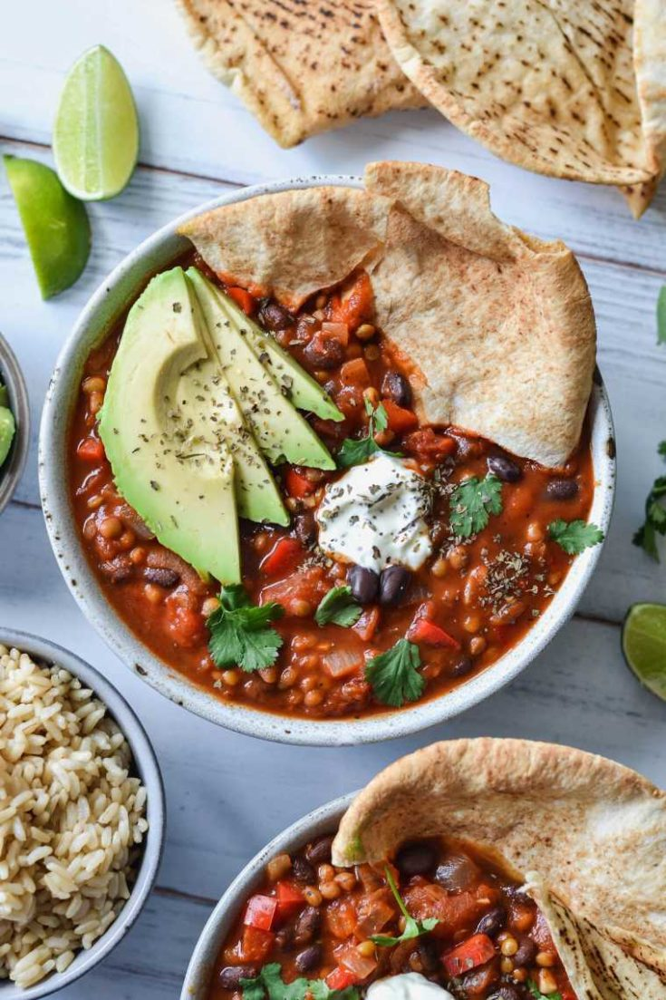

Vegan Chili

The perfect chili dinner for a cold and busy weeknight with the family
This delicous and flavorful 'chili sin carne' is full of a healthy array of vegetables, beans and spices. Its also super easy to make! This vegan chili recipe only takes a total of 10 minutes to make before satisfying every belly in the house hold.
Not only is this vegan chili quick and easy but it is also affordable, full of flavor, family approved, healthy, easy to adapt, and freezer friendly.
Ingredients
- 3 tbsp olive oil
- 2 red onions - diced
- 3 cloves garlic - finely chopped
- 1 red bell pepper - diced
- 1 can diced tomatoes
- 1 cup passata or an extra can of diced tomatoes
- 1 can black beans
- 1 can brown lentils
- 1/2 tsp ground cumin
- 1 tsp sweet paprika - ground
- 1/2 tsp dried oregano
- 1/2 tsp chilli powder or flakes
- 1/2 tsp cayenne pepper
- 1/2 tsp salt
- 1/2 black pepper
You can pair chili with rice, avocado, vegan cheese, tortilla chips, lime, or fresh cilantro.
Steps
- Place a large saucepan over medium-high heat and add 3 tablespoons of olive oil. Add the garlic, capsicum and onion and cook, stirring, until soft.
- Add the spices, oregano, salt and some ground black pepper and stir until fragrant.
- Add the remaining ingredients and bring to a simmer. Once heated through, the chilli is ready! Serve in a bowl with your favourite toppings and sides
- Sit down and enjoy your delicious meal!
Return to Homepage